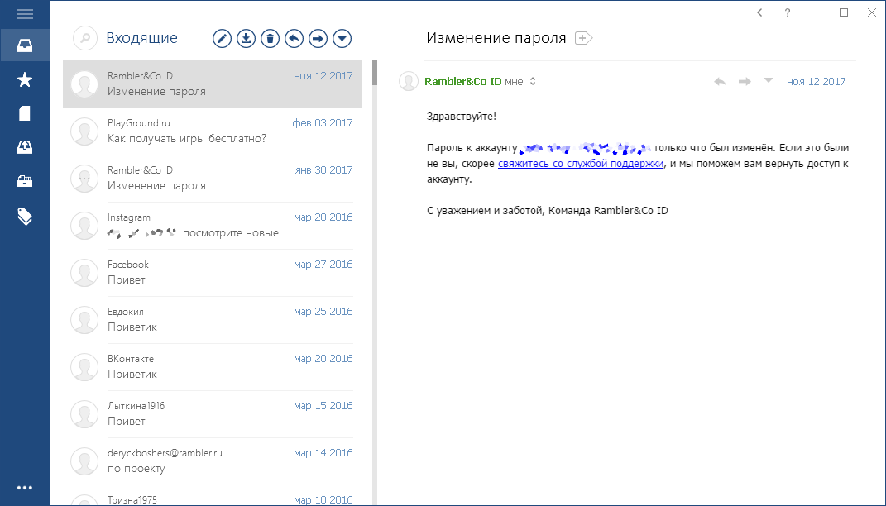
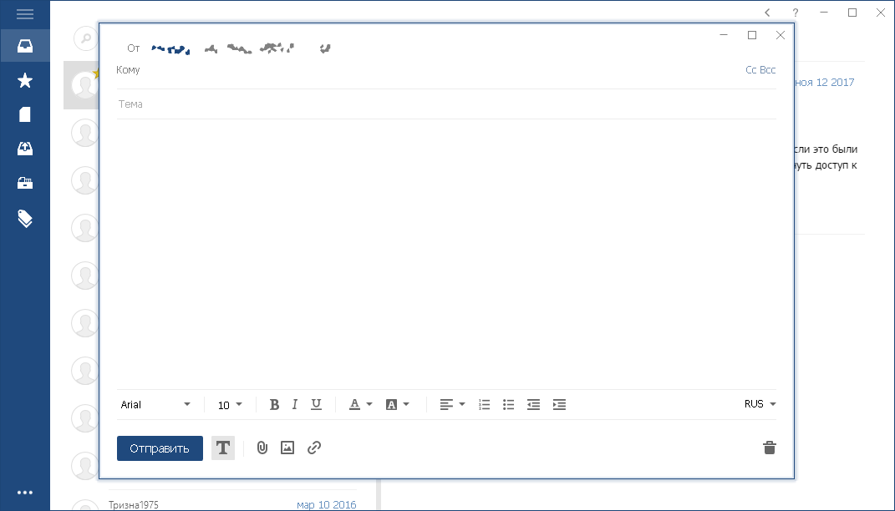
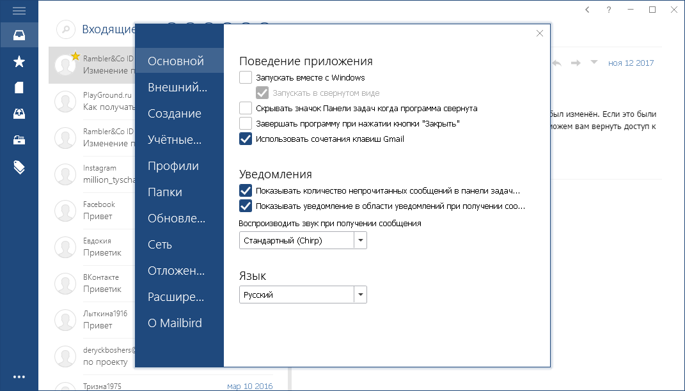
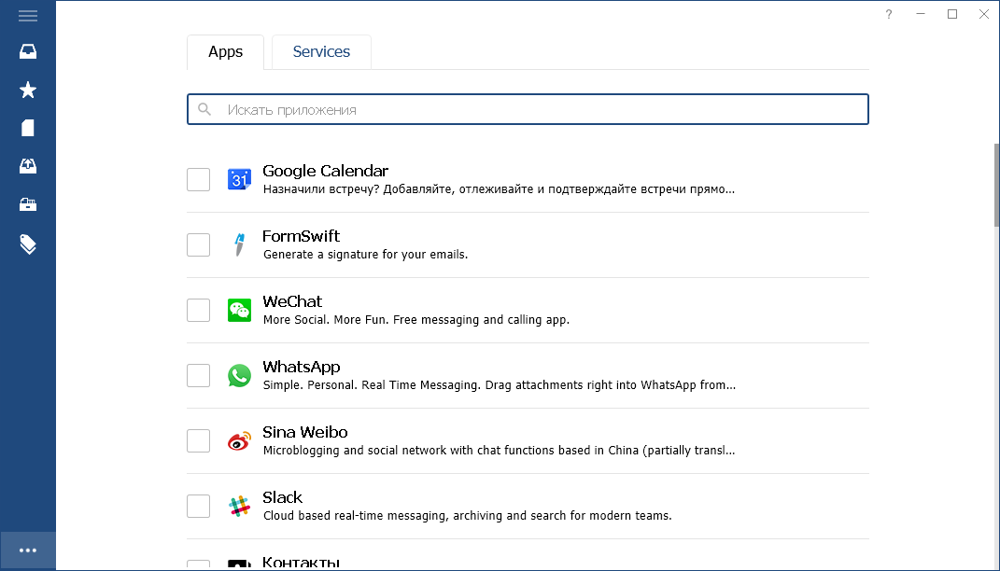

Mailbird Pro 2.8.5.0

Mailbird is a very interesting email client. Simple, convenient and with a set of all necessary functions. It was created after the closure of the Sparrow project and partly copies its simple interface. Project goal: creation and further development of a fast email client with an accessible interface. In functional terms, this is a simple but full-featured email client: support for working with multiple email accounts (up to 100 accounts, you can specify a known service or POP3 / IMAP server of the email provider), search by letters and attachments, a system of message reminders (Snooze, as in GMail), notifications of new mail and all that jazz. Mailbird has a peculiarity - a special function of the "Application", which, in fact, is a set of ordinary sites of Internet services, which open in the program window for convenient interaction with the mail client. So there are several applications from the developer that add additional functionality to the program (for example, contact manager or search by attachments).
General information:
General information:
Type: installation
Languages: multi, there is Russian
Treatment: igorca / URET
Command line parameters:
Silent installation: / S
For example: setup_file.exe / S
Supported Windows operating systems:
Type: installation
Languages: multi, there is Russian
Treatment: igorca / URET
Command line parameters:
Silent installation: / S
For example: setup_file.exe / S
Supported Windows operating systems:
7 SP1 (32-bit) 7 SP1 (64-bit) 8.1 (32-bit) 8.1 (64-bit) 10 (32-bit) 10 (64-bit)
   